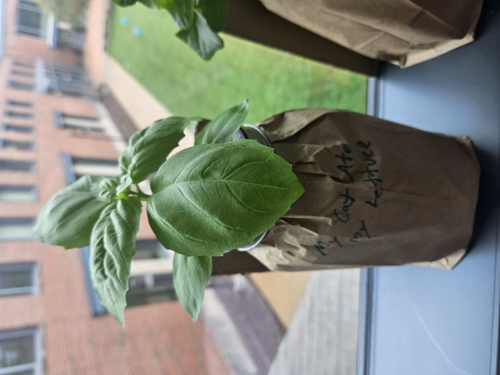
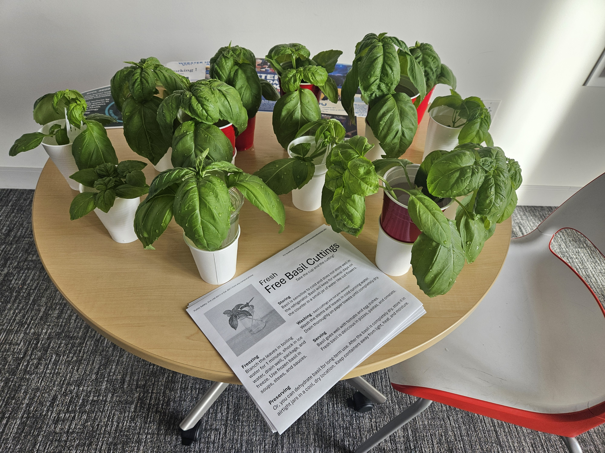

I'm grateful to have met a really good eye doctor, Dr. Tonya Bourn. Several years back, while talking with her, she says to me, "Wow, you should become an eye doctor!" And I didn't think much about it at the time, but over time, I came to realize that yeah, I really like talking with her and hearing what she has to say. I enjoy those conversations because she loves digging deeper into the science of eye health, and I love learning about it and seeing all the ways that science can really help you lead a happier, healthier life.
One of my long-term goals is to help people better understand their own health so they can better advocate for what they need. Personally, I've used citizen science sites such as https://microbiomeprescription.com, that aggregates research articles and compiles a whole host of relevant insights into understanding gut health, and I look to that as inspiration for my own personal projects. I started going back to school to learn about and understand the various data sources and data used by that site, how to read and understand scientific research, and how to apply that knowledge to pay it forward for others.
As a student of Webster university and member of Dr. Miller-Struttmann's lab, I've been able to both learn and utilize various lab and research techniques. Additionally, I'm active in helping out around campus and assisting in volunteer events on campus.
Autoclaving, Micropipetting, PCRI've been growing hydroponic produce on campus with the goal of building food security on campus through year-round produce production. My method of choice, the Kratky method (named after Dr. Bernard Kratky), was chosen for its simplicity and affordability. Each plant is grown individually in a self-sustaining mason jar along the windowsills on campus. I enjoy naming the jars fun names, such as "Duck, Duck, Produce!".
Over the summer and fall of 2026, I was able to harvest 2 salads-worth of pesticide-free lettuce and 16 cuttings of pesticide-free basil to distribute on campus with the help of others.
I've been helping restore and maintain the community garden on campus at Webster university. Along with periodically utilizing iNaturalist to upload and identify pictures of insects and plants.
iNaturalistA collection of tools to generate the charts used in vision therapy. It's hard to find good vision therapy tools, especially the specialized eye charts necessary to perform some of the exercises. I'm working on this as a supplement to other resources used when performing at-home vision therapy.
Testimonials- "Wow this is so gracious of you bless you. This is such a huge resource for those of us that can’t afford VT."
- "Thank you very much for this. 10 months postpartum in an area with no VT clinic, this is a LIFESAVER."
C#, ASP.NET Core, .NET MAUI, Entity Framework Core, PostgreSQL, Azure Communication Services, JavaScript
Self-taught and highly motivated software developer with over 8 years of experience in developing, maintaining, testing, documenting, and troubleshooting web and mobile applications. Strong knowledge in web development principles, including responsive design, separation of concerns, testing, and security hardening. Demonstrated ability to manage projects from start to finish, including client communications and supporting customers. Committed to creating high-quality, readable code and delivering on-time results. Passionate about web application development and quick to learn new technologies.
- Designed, architected, and built an opportunity database for students.

